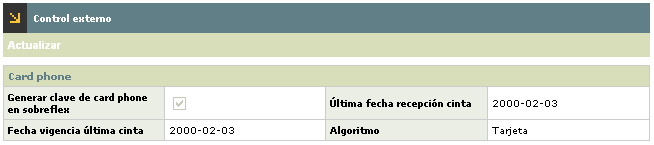
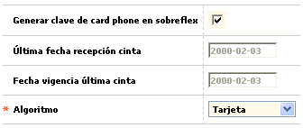

|
Franquicias |
SE RETIRA ESTE FORMULARIO DEL SISTEMA Y DE LA AYUDA.
Control externo: Conjunto de parámetros que le permiten a la entidad definir los valores o códigos estándar a utilizar en la generación de archivos o interfaces destinados a entes externos. Así mismo, la forma o pantalla posee un botón especial que permite definir las condiciones de los datos del archivo de excepción o de negativos.
El formulario contiene las opciones Actualizar y un botón en la parte superior para regresar al formulario principal de Franquicias.

Actualizar: Si el usuario invoca la opción Actualizar se despliega un nuevo formulario en el cual los únicos campos modificables son 'Genera clave de Card phone en sobreflex' y 'Algoritmo'.
|
Genera clave de Card phone en sobreflex |
En este campo la entidad señala si al momento de generar los sobreflex de claves de PIN, se debe incluir o no en el sobreflex la clave para servicio telefónico (Visaphone/Masterphone, etc.). En caso de que éste parámetro no se encuentre marcado, se interpretará que en los sobreflex solo irá el número del PIN. |
|
Ultima fecha recepción cinta |
Campo en formato YYYY-MM-DD que contiene parámetro de control y registra cuál fue la última fecha de la cinta de Servicio Telefónico (Visa phone, Masterphone), recibida y cargada al sistema. |
|
Fecha vigencia última cinta |
Este campo en formato YYYY-MM-DD, contiene la fecha hasta la cual se considera vigente la cinta de Servicio Telefónico. |
|
Algoritmo |
Campo alfanumérico de dos posiciones, obligatorio, mediante el que se asigna un código identificador a cada tipo o clase de producto genérico por franquicia. |
Franquicias | Clases de prefijos | Parámetros acciones para el exception file | Parámetros acciones por bloqueos | Parámetros regiones para el exception file